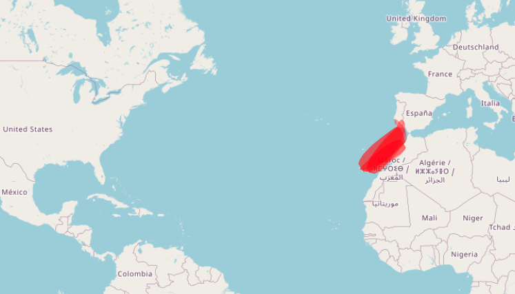
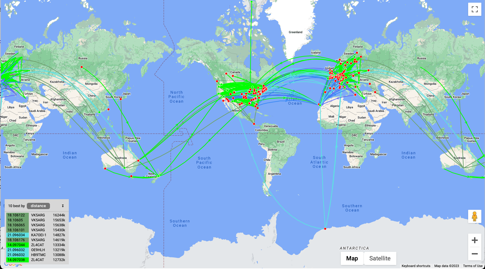
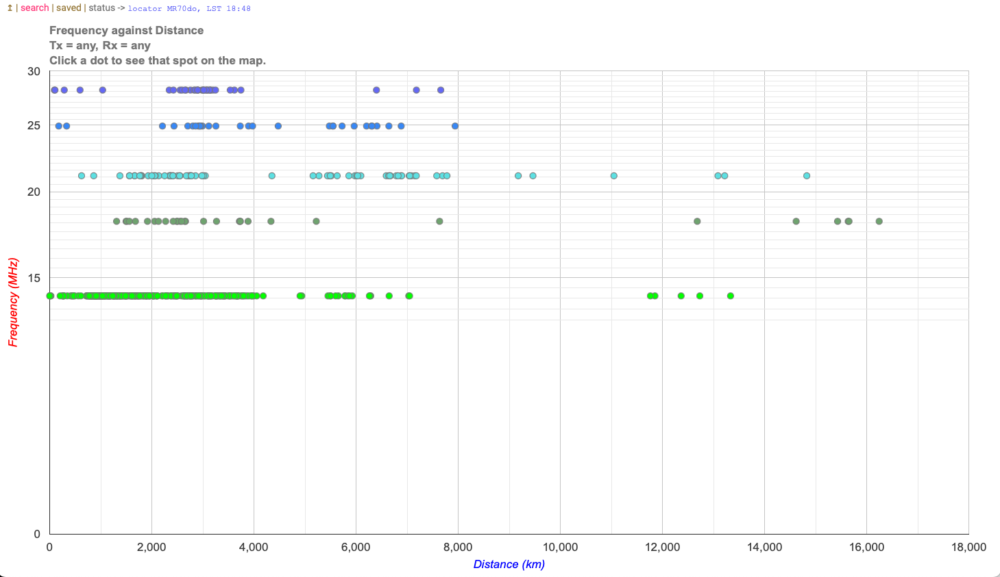

Quest: Band Conditions
This page is a work-in-progress. Many components are incomplete.
About
This chapter is about determining whether the HF and VHF frequency bands support long-distance (DX) communication (see also this Technician exam question).
Why should you care about that? If you want to hear, and eventually communicate with stations all over the world, you will want to learn about when band conditions are right to support your dreams.
Hams with HF privileges like to check in on band conditions from time to time since the conditions change regularly just like the weather.
The main things to check are what bands are open to what places. The band or frequencies we can use to communicate with different places vary by time of day, time of year, current and long-term solar conditions.
Here are some resources to see how the bands are doing.
HF propagation
The hfpropagation.com site has some great visualizations about conditions on [HF].
For example, the following shows a map of RF propagation on the HF bands centered on New York City:

Here is another way to visualize band conditions.
https://hf.dxview.org/perspective/FN10bt
Look at the maps. Could you talk to New York City? On what band or bands?
VHF propagation
The dxview website shows DX conditions on the 2m VHF band. These are typically much more short-lived than DX openings on the [HF] bands.
Here is a screenshot of conditions observed around 2023-04-18 around 1820 [UTC](lingo.qmd#uhf.

PSK Reporter
The pskreporter.info site aggregates thousands of signal reports from hams all around the world.
For example, here is a real-time map of conditions right now.
WSPR Rocks
The wspr.rocks site provides some terrific visualizations of the latest Weak Signal Propagation Report (WSPR) data.
Here is a map showing data about which WSPR stations are hearing one another on 2023-04-02:

And here is a plot of frequency vs. distance.

The 20m, 17m, and 15m bands were long (supporting long distance or DX contacts) at the moment this figure was taken.